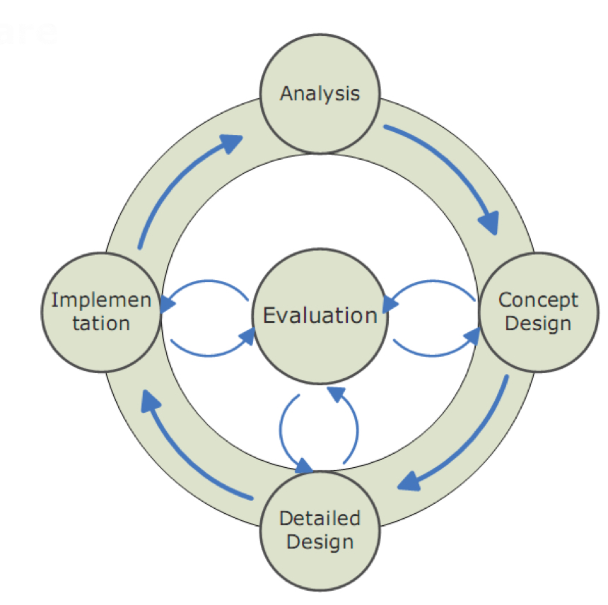

Objetivos
- Plannificación de una evaluación
- Procedimientos de evaluacion analítica
- Procedimientos de evaluación empírica
Introducción
Las interfaces de usuario se deben evaluar como cualquier software para verificar la usabilidad y mejorar y corregir los fallos.

Evaluamos la interface de usuario y su utilización, tareas realistas y entorno realista.
Revisaremos requerimientos de usabilidad
- Cualitativos: fácil de aprender, tolerante a errores, etc.
- Cuantitativos: Tiempo, números de clic, etc.
- Priorizar requerimientos de usabilidad.
Persona que involucra:
- Expertos de evaluación
- Expertos en el dominio
- Equipo de desarrollo
- Usuarios (psuedo) reales
Para la planificación tenemos que tener en cuenta:
- Disponibilidad
- Aspectos
- Método
- Tareas
- Recogida de datos
- Análisis de resultados
Documentación de una evaluación tiene que tener:
- Sujetos
- Variables
- Tareas
- Procedimiento o protocolo
- Análisis de resultados
Métodos de evaluación analíticos
Analizan sin la participación de usuarios.
Evaluación heurística
Cumple determinadas normas
Heurísticas de Nielsen
- Estado del sistema simpre visible
- Lenguaje de los usuarios
- Control y libertad
- Consistencia y Estándares
- Prevención de errores
- Minimizar la carga de la memoria
- Flexibilidad y eficiencia
- Diálogos estéticos y diseño minimalista
- Ayuda a los usuarios a reconocer, diagnosticar y recuperarse de errores
- Ayuda y documentación
Heurísticas de Shneiderman
- Consistencia
- Usabilidad universal
- Retroalimentación
- Conducir a la finalización de las tareas
- Prevención de errores
- Facilmente retroceder
- Sensación de control
- Reducir la carga de memoria
Heurísticas de Norman
- Conocimiento del entorno
- Simplificar la estructura de tareas
- Visibles
- Correspondencia usuario-sistema
- Restricciones
- Prevención de errores
- Estandarizar
Heurísticas participaiva
- Usuarios en vez de expertos
- Adaptación de las heurísticas al lenguaje del usuario real
Ensayo cognitivo
Comprobar que los usuarios pueden realizar determinadas tareas con la IU.
Métodos de evaluación empíricos
Se basa en la observaciones de usuarios
- Los participantes utilizan la IU
- Los evaluadores recogen datos
Ténicas de recogida de datos
- Cuestionarios y entrevistas
- Observación directa
- Think alound
- Focus groups
- User logging
- User feedback
Diferencia de cuestionarios y entrevistas
-
Cuestionarios
- Medio escrito
- Diseño rígido
- Pregunas abiertas, semiabiertas o cerradas
- Menor esfuerzo
-
Entrevistas
- Medio oral
- Diseño flexible
- explicaciones de usuario
- modificación de preguntas
- mayor esfuerzo
Observación directa
- Entorno real
- Tomar notas
- Descubrir usos inesperados
TODO